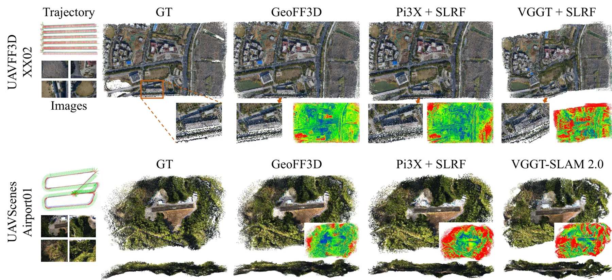
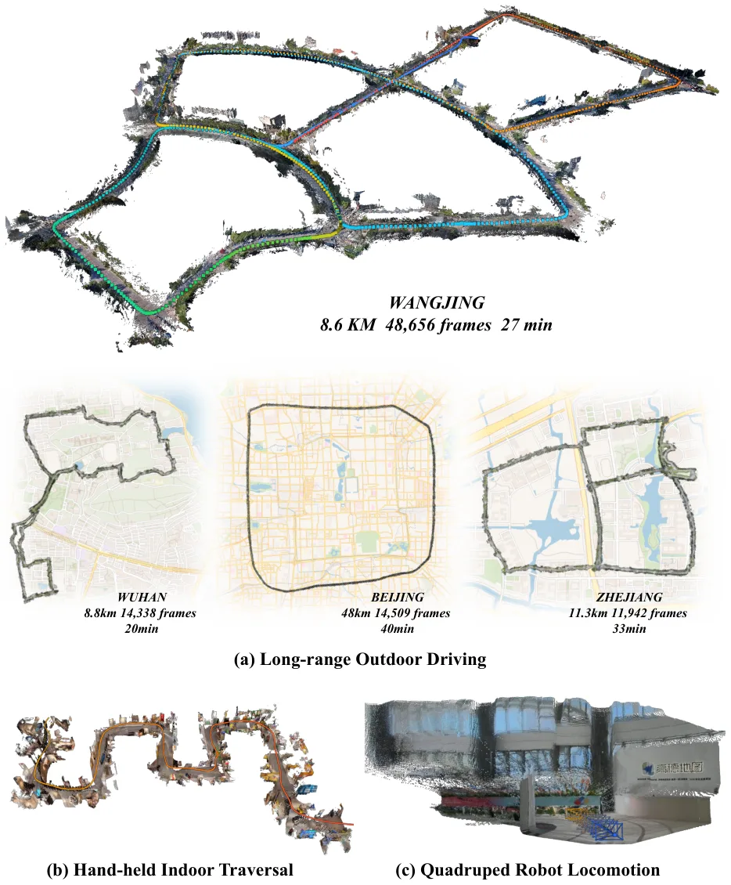
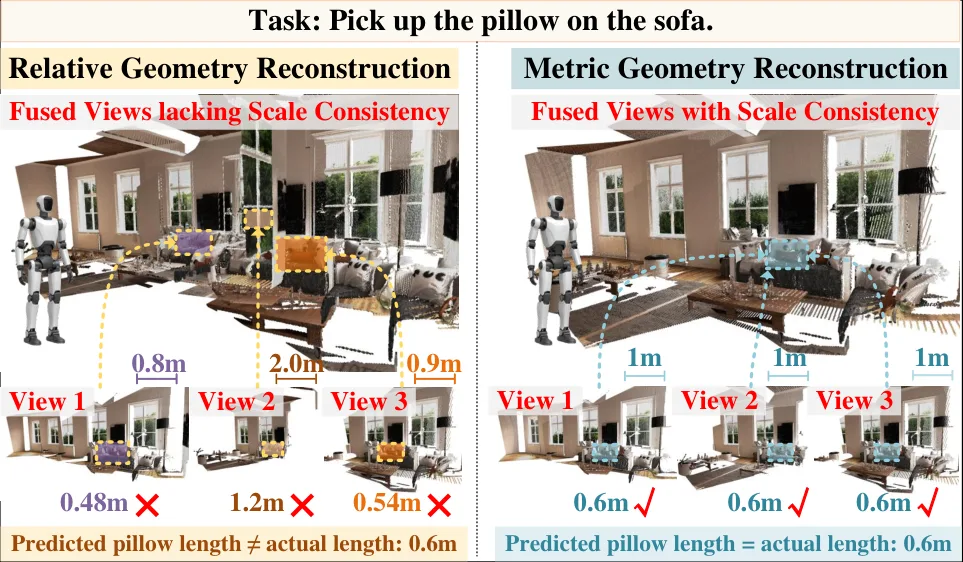
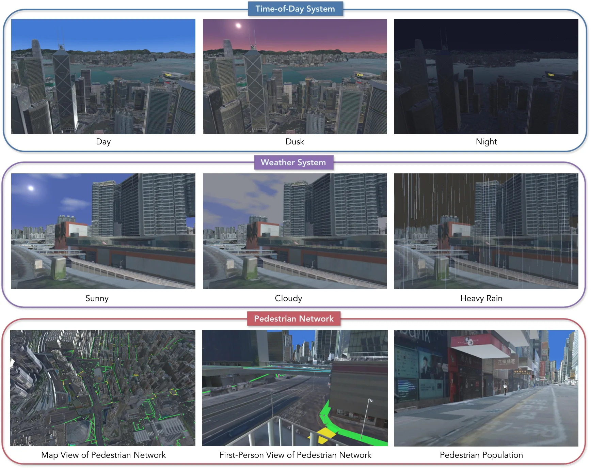

新论文 · 日期 2026-08-28 · score 24 · S层 · Geometry Foundation Models / 3D Foundation Models · cs.CV
内容级别：完整单篇海报
作者：Xiang Yang, Yongli Wang, Yunsheng Zhang
评分 24/10
3D foundation model前馈重建metric geometryUAV测绘空间分块
一句话工作总结：把绝对坐标、重力方向和局部前馈几何预测组合成可扩展的 UAV 大场景重建流水线。
GeoFF3D 将地理配准相机平移和可选几何先验注入前馈模型，在重力对齐的 Z-up 米制坐标系中直接预测相机位姿与稠密点图。配套的空间大规模重建框架 SLRF 按地面覆盖足迹切分有重叠块，传播共享视图先验，并以重力保持的层级方式聚合局部结果，从而避免近共线航迹上全 Sim(3) 对齐的不稳定。
Existing feed-forward 3D reconstruction methods typically process a bounded number of images and recover cameras and geometry in local or internally normalized frames. Extending them to large-scale UAV mapping…

新论文 · 日期 2026-08-27 · score 17 · S层 · Geometry Foundation Models / 3D Foundation Models · cs.CV
内容级别：完整单篇海报（待补全）
作者：Jiarong Han, Jincheng Xiong, Yuzhou Liu, Linzhe Shi
评分 17/10
流式重建局部上下文相对位姿漂移控制在线几何
一句话工作总结：以固定 12 帧局部上下文替代可增长的长程记忆，证明局部、等变的几何测量可以支撑超长流式重建。
ABot-Recon 只缓存前 11 帧的 KV 特征，在当前相机坐标系预测 point map、confidence map 和相邻帧相对位姿，再通过顺序组合恢复全局轨迹与几何。轻量 motion-visual rotation refiner 和 composition-aware pose loss 用于降低长序列旋转误差累积。
Streaming 3D reconstruction from extremely long videos requires estimating camera motion and scene geometry online under bounded memory and computation. Early streaming models achieve causal, bounded-cost infe…

新论文 · 日期 2026-08-27 · score 10 · S层 · Geometry Foundation Models / 3D Foundation Models · cs.RO
内容级别：完整单篇海报（待补全）
作者：Fengjun Zhong, Congjia Chen, Zhaoxu Liu, Jinyang Du
评分 10/10
metric geometry机器人操控深度条件尺度等变空间感知
一句话工作总结：把相对几何升级为可直接服务动作标定和操控的米制几何表示。
MAGP 通过 Metric Scale Equivariant Augmentation 让重建结果响应相机平移和深度中的真实尺度，并以 Flexible Metric Conditioning 支持任意视图数量及相机/深度输入组合。它把 metric geometry tokens 接入机器人策略，在 ETH3D、MegaDepth、ScanNet++ 以及 LIBERO、RoboTwin、LIBERO-Plu…
Recent embodied models increasingly leverage geometric representations to improve spatial reasoning and robotic manipulation. However, existing reconstruction methods only reconstruct relative geometry with ar…

新论文 · 日期 2026-08-28 · score 8 · A层 · Embodied Navigation / VLN / Spatial Reasoning · cs.CV
内容级别：半海报（待补全）
作者：Tianjie Ju, Zheng Wu, Yueqing Sun, Yuhan Cui
评分 8/10
具身导航空间推理城市沙盒闭环评测MLLM
一句话工作总结：提供从局部空间问答到闭环城市导航的评测桥梁，揭示空间表征不能自动转化为持续可靠的行动。
UrbanGround 将香港全域 3D 地理数据转成具备碰撞、第一视角交互、地理坐标轨迹、路线变化和行人动态的城市沙盒，并用五级评测阶梯研究 MLLM 的局部理解、导航和环境适应。论文发现模型具有局部识别和短程空间推理能力，但在长程探索、方向保持、可行路径选择和路线失效后的纠错上不可靠。
Multimodal large language models (MLLMs) can interpret a street view, but urban agency depends on whether such local evidence remains useful after the agent starts to move. In this paper, we investigate how fa…